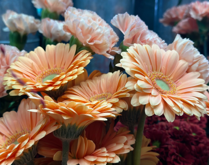

Lenes Blomster World
En passion for blomster
"Blomster betyder glæde, jeg kigger ikke på blomster på en sørgelig måde. Det er stadigvæk glæde. Det betyder respekt venskab og kærlighed. Blomster betyder bryllupper, fødselsdage, årsdag, fri. Til den du elsker og i sidste ende til den du elskede. Så blomster betyder rigtig meget. På mørke aftner gør blomster dig glad - med en kop kaffe. Det betyder rigtig meget for mig. Når jeg om sommeren cykler rundt og rundt. Kigger jeg i alle haver - jeg kan ikke lade vær. Normalt skal man ikke stå og glo på dem, men nogle gange tænker jeg bare - wow nogle flotte blomster." - Mandana ejer af Lenes Blomster World
Blomster er små vidundere, der fanger øjet og rører hjertet
Farverig symfoni af naturens skønhed.


